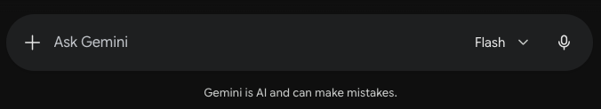

Llamas make mistakes

A lot. In general they hallucinate or incorrectly answer prompts 20% of the time.1 That's a B average. To be sure, C's get degrees, just the same as A+ students, but if you are going to have someone driving you down the highway at 75mph, do you want the guy that got a B on his driving test? "What did a yield sign mean again? How am I meant to go around this traffic circle? Who has right of way here?" Ask five questions and it gets one wrong.
My intention is not to collect mistakes that the llama spits out at us during this march toward disappointment. I am sure there are sites which are doing that, or there soon will be. Do you remember how hysterical all of the "Autocorrect Fail" sites were when autocorrect first hit our phones? So funny. A whole genre of humor.2 Someone can do that for LLMs, but it doesn't need to be me.
(And a lot of the mistakes that the llamas make are not at all funny. Pretending to be a friend to a teenager, an LLM talked the unhappy youth into suicide.3 And an LLM was used to select targets during the Iran War and killed two hundred schoolgirls.4 Those are tragedies that someone should be held responsible for. Someone should also be collecting these, and all the data related to them, as well. For accountability, not laughs.)
I'm just going to collect my own experiences, none of which are tragedies. And I do so because I think it is important to understand how wrong an LLM can be, and how much work it is to keep them on track, to make them useful. My first example5 was from my second week using Claude Code, which I call CC, or Ceecee, since I have a friend named Claude. I also invoke it using the command 'code,' no name.
Character Assassination
I was fiddling around building a very thin client6. Mostly I was experimenting and seeing what CC could do. Quite a bit, but with some mistakes. All of the data is backed up four different ways, which is something I learned because I am stupid,7 so any tool I use is likewise stupid.
The thin client is a small piece of software that would do one or two things cleanly. In this case it was pulling messages down from a server, showing them to the user, and letting the user write new ones. This is not complicated work, I plan carefully, force CC to plan small chunks of work, test and correct throughout the process, and, so far, mostly get what I am looking for. The thin client was not an exception and I was noodling around, adding little features, correcting how things were presented, when we started getting a bug report from a user.
So I reproduced the error, or thought I did, and put up a new version for the user to download. When the bug report was exactly the same, I wondered if the update had been downloaded correctly and how I would know. So CC and I mapped out a way for the thin client to report its version each time it talked to the server. Many clients these days do most of their communications with the server in plain text. If you are a polite developer8 you stick to the standards, which is what we did, and we included the version in an x–header: "x-version: 1.0.3"
We did that and while I tested it, the server kept refusing any of the requests our new client made. When we finally tracked it down in testing, CC admitted that it had made an error in the code and used an em-dash in the x-header name, so all subsequent requests were ignored.
I know. I have bifurcated my audience. Those who are now face-palming or shouting "See?!" at their screen, and those who need a little more explanation.
The way you make software work is by following rules. Standards. If we don't agree that the first line of your spreadsheet is going to have the column names along the top and then the values following below them, then it will be difficult to get very far with manipulating the data. Standards are the only reason we can have an Internet at all. We have connected all these different machines and expect them to talk to one another. To do that, we have to agree on how they will structure their communications.
The agreement, the standard, is that header names are only allowed to have ASCII characters. It's not important what those are, it's only important to know that it is a limited set of the characters you see on your screen. In fact, the name of a header, x-header or an accepted standard header like To: or From: has to be made up of printable ASCII characters numbered 33 to 126. So no spaces. But, extremely importantly: no em-dashes. No accent marks. So plain vanilla it is soporific.
And CC had ignored the standard. To me this is emblematic of why llamas cannot replace real engineers. The rules for the headers were written in 1977. It is accurate to say that they are foundational to the Internet. Really, I think, to modern software at large. Ignoring it is saying, "There is nothing fundamental that I know or follow." Was it a mistake? Yes, but it was a mistake like getting onto the highway going in reverse is a mistake. It demonstrates a basic incompatibility with how things are meant to be done. How they will get done. How anything works.
If you look in the paragraphs above there is a place I used an em-dash when writing out 'x-header.' It is very unlikely you noticed. But to a computer 'x-header' and 'x–header' are impossibly different. It cannot accept the second. And the llama ignoring that shows that it doesn't have any basic understanding of how computers, which has to include itself, work. Or, if it does somehow contain that knowledge, it ignored it. It discarded that knowledge at a time when keeping it in mind would have made the code work and forgetting it would cost time and energy chasing a stupid bug.
So now I am a stupid manager of a stupid coding engineer. This is not the dream I was sold. But, at least I know why it happens. It's not like I'm going to let it fly an airplane.